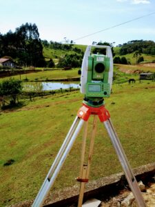
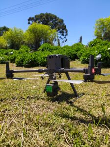
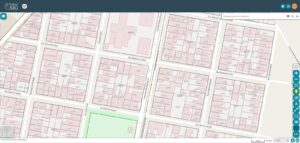
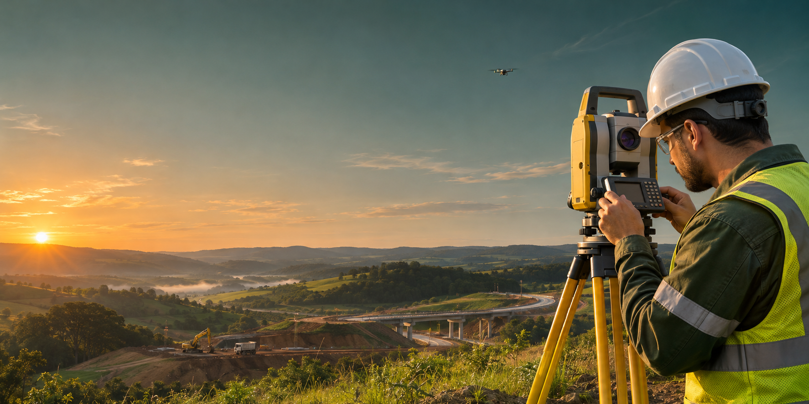

01
Levantamento topográfico
Base confiável para projetos, obras, retificações e regularizações.
Explorar ↗Topografia • Georreferenciamento • Engenharia
Do primeiro ponto em campo à entrega técnica final, transformamos o território em informação segura para decisões melhores.
Há 19 anos, a Solo Topografia entrega soluções para pessoas, empresas, prefeituras e consórcios. Equipe técnica, frota própria e tecnologia moderna trabalham juntas para reduzir incertezas e dar segurança a cada etapa do projeto.
02 Soluções integradas
Serviços técnicos para obras, propriedades, infraestrutura e gestão territorial, com precisão e responsabilidade em cada entrega.

Base confiável para projetos, obras, retificações e regularizações.
Explorar ↗
Dados geográficos organizados para análise, gestão e conformidade.
Explorar ↗

03 Por que a Solo
Não entregamos apenas medições. Entregamos uma base técnica sólida para o seu projeto avançar com segurança.
Profissionais preparados para demandas de diferentes escalas e complexidades.
Frota, equipamentos e processos que garantem agilidade e autonomia.
Comunicação clara, acompanhamento e soluções ajustadas a cada cliente.
04 Como trabalhamos
Levantamos o contexto, escopo e objetivo real da demanda.
Definimos metodologia, equipe, equipamentos e cronograma.
Coletamos, processamos e validamos os dados técnicos.
Apresentamos resultados claros, completos e utilizáveis.
05 Vamos conversar
Conte o que você precisa. Nossa equipe analisa a demanda e indica a melhor solução técnica.
Solicitar orçamento ↗